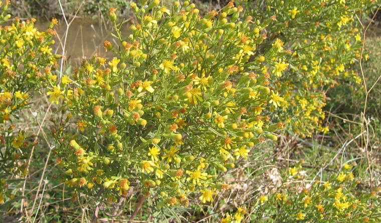
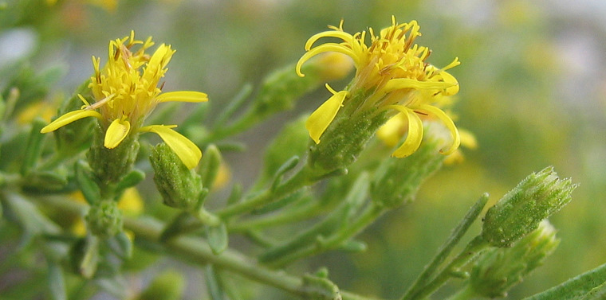
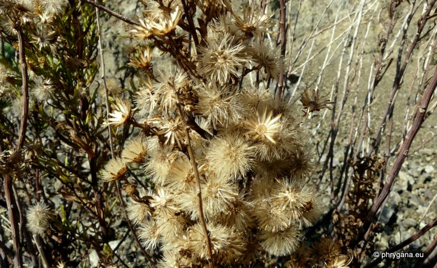

")
")
| PHRYGANA | Fauna | Flora | Galles | liste des espèces |
contact -
info - commentaires phrygana1 (at) gmail.com |
| Particularités crétoises | nouveautés | Mines | ressources naturelles |
| Dittrichia viscosa (L.) GREUTER subsp. angustifolia (BÉG.) GREUTER |
| 17 | Flora | ASTERACEAE | Inuleae | Dittrichia GREUTER |
 Dittrichia viscosa subsp. angustifolia Apodoulou 03 novembre 2006 |
| Syn: Inula viscosa subsp. angustifolia BÉG., Dittrichia orientalis BRULLO & DE MARCO | |
| (fr) l'Inule visqueuse - (en) False Yellowhead | |
| Feuilles: linéaires-lancéolées, larges de 6 à 12mm, semi-embrassantes, glanduleuses et collantes. Le bas des tiges est lignifié. | |
| Fleurs: inflorescence pyramidale avec de nombreux capitules larges de 10 - 20 mm. Fleurs ligulées et tubulées jaunes. Pétales dentés. | |
| Hauteur: 40 - 150 cm | Type biologique: hémicryptophyte ramifié -- nanophanérophyte |
| Floraison: juin juillet août septembre octobre novembre | |
| Altitudes: 0 - 850 m | |
| Statut en Crète: indigène -- native | |
| Biotopes en Crète: sols frais près des côtes, lits asséchés de rivière, fossés, bords des routes, terrains de culture abandonnés. | |
| Distribution: région Méditerranéenne orientale | |
| Note: la plante , lorsque froissée, dégage une odeur fétide. Elle a également des propriétés tinctoriales. | |
| Utilité: source importante de nectar et de pollen pour les insectes en fin d'été crétois | |
| Plante-hôte pour: | ||
|
|
|
|
| Eupithecia centaureata | Condica viscosa | |
|
 Dittrichia viscosa subsp. angustifolia Agia Galini 24 octobre 2007 |
|
 Dittrichia viscosa subsp. angustifolia Agios Giorgos (Melambes) 15 décembre 2011 |
| 20 juin 2013 |
| © paul fontaine -- © Phrygana.eu 2007 -- 2013 |